The idea of taking something that is complex and defining a simpler way to refer to it is an abstraction, and a function is one of the fundamental ways to create an abstraction in code
Defining A Function
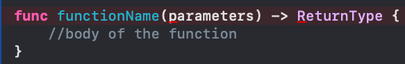For tasks that require no additional inputs, there will be no function parameters.

Some functions need to be more specific, so you use parameters
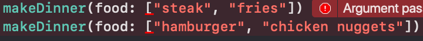Once a function has been properly declared, you can call it, or execute it, from anywhere just by writing it's name
Parameters
To specify a function with a parameter, insert a name for the value, a colon (:), and the value's type-all inside the parentheses. For example, say you wanted to write a function called triple that takes in an Int, triples the value, and then prints it.
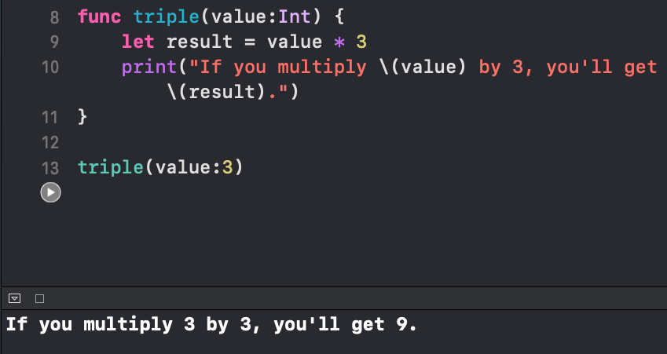To pass multiple arguments to a function, you'll need to seperate each parameter with a comma (,).
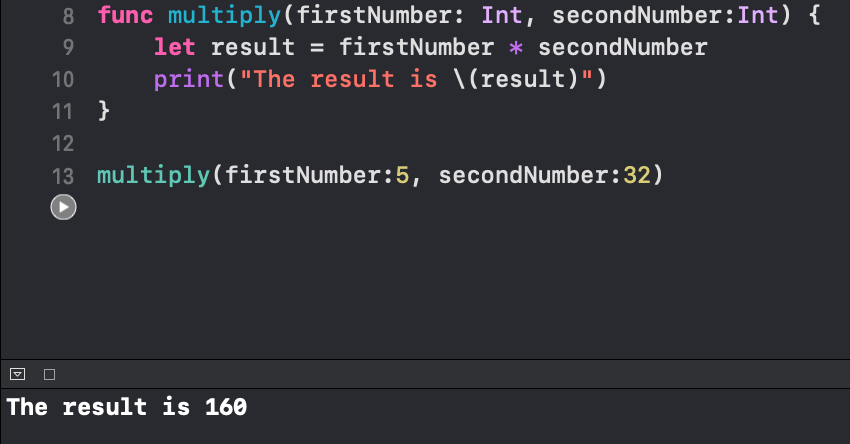Argument Labels
Instead of having the label for each argument within a function to have the same name internally as it does externally, you can have your function to read a little more cleanly
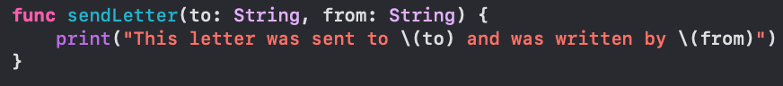You can see that 'to' and 'and' are very poor names, so if you want the name of the constant to differ from the argument label, you can specify an external name before the local name.
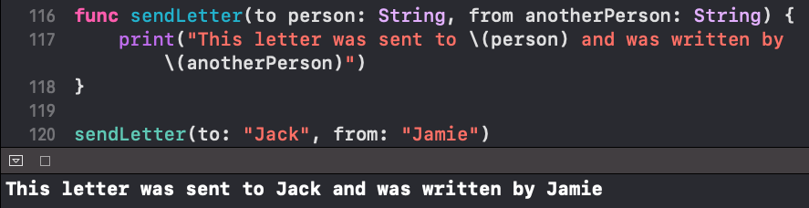If a function is clearer without an argument label, you can omit it.
To omit the argument label, use _ in place of the external name
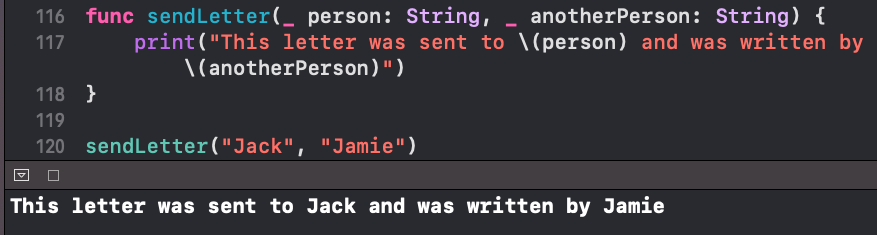Default Parameter Values
There are times where you want to change a value every once in a while. So you can set up parameters with default values, this way you can call the function with or without the parameter. If the parameter is unspecified, the function will simply use the default value. You'll need to place all parameters with default values at the end of the list, and these parameters must all have argument labels.
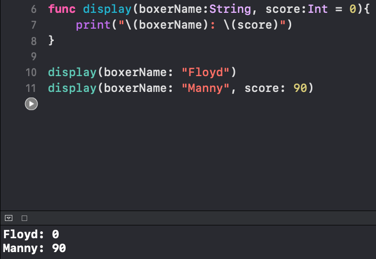Return Values
It is unlikely you'll always want to print "The result is" before the result from "divide". Instead, it might make more sense if the function simply returned the new value. To do so, you'll need to adjust the function declaration to have a return value and to specify the value's type. You've learned that multiplying two Int types will always result in an Int, so that's the return type you'll use.
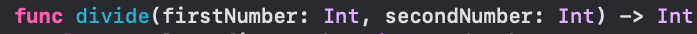Within the function body use the return keyword to specify what the return function will return. The following example returns result
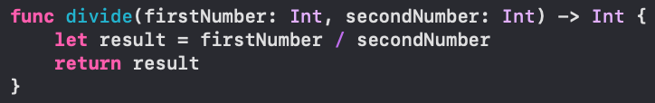The function can be written without the constant
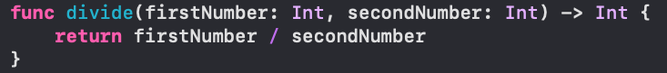To call this function and use the return value, assign the return value to a constant.
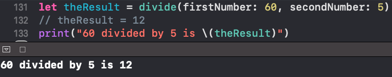If you don't need to use theResult ever again in the future, you could use the function inside the print statement and skip assigning the value to a constant
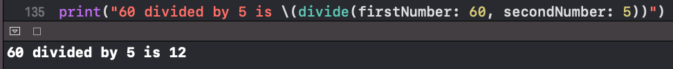